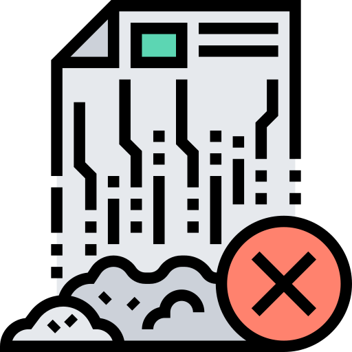

☰
🌿 Geovisor del Espacio Público - Comuna 22
Adicionar
Actualizar

Eliminar
❓
x: -, y: -
Capas
Leyenda
Herramientas
🔁 Restablecer vista
Fuente: IDESC - Alcaldía de Santiago de Cali
Ver README del proyecto
Selecciona la capa de puntos
Capa seleccionada
Selecciona una capa
Cestas de residuos
Bancas
Recreación
Paradas del mío
Cartelera de información
Vallas publicitarias
Licencias vencidas
Una vez selecciones la capa, debes dar click sobre el mapa...
Cancelar
Continuar
➕ Añadir punto
Cancelar
Guardar
✏️ Editar punto
Cancelar
Guardar
❌ Eliminar punto
¿Seguro que deseas eliminar este elemento?
Cancelar
Eliminar
 Adicionar
Adicionar Actualizar
Actualizar